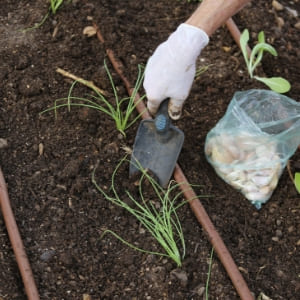
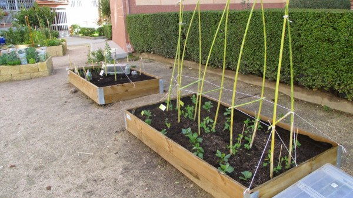
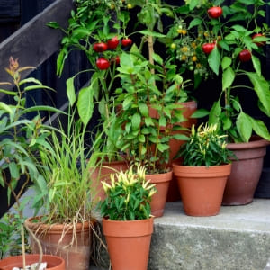

HUERTOS CASEROS
¿QUE ES UN HUERTO CASERO?
Los huertos caseros son una tendencia relativamente reciente en las ciudades debido a que
representan la posibilidad de cultivar nuestra propia comida al interior de nuestras casas
y nos permiten obtener experiencia en cultivar, algo que los citadinos hemos perdido.
Estos huertos son espacios dentro de nuestros hogares en donde se pueden cultivar diversos
tipos
de verduras y hierbas aromáticas. Pueden ser una pequeña franja al lado de una ventana o un
patio
lleno de variedad, y dependen del espacio y el tiempo disponible.
Empezar un huerto es una excelente opción para cultivar y consumir nuestros propios
alimentos y
acercarnos a la naturaleza, y estos se han vuelto cada vez más comunes debido a la necesidad
de
tomar control sobre nuestra propia alimentación y salud.
Tipos de Huertos Caseros
1. HUERTO EN TIERRA

Es el huerto de toda la vida cultivado en tierra directamente. Hay muchas técnicas para poner un huerto en una parcela de tierra, y también dependiendo del cultivo.
2. HUERTO EN BANCALES

Puedes montarlo sobre tierra directamente o en superficie plana como el suelo de un patio grande y aportando tu toda la tierra a los bancales. El cultivo en bancales se ha extendido porque puedes crearlo de forma económica en la tierra. Lo que si vas a necesitar es ayuda porque conlleva bastante esfuerzo físico. Se reparten las variedades de cultivo en los bancales creando asociaciones favorables. Permite poner un gallinero portátil sobre el bancal, y aprovechar para que las gallinas limpien el bancal de semillas y otros elementos entre cultivos.
3. MINIHUERTO EN EL BALCÓN

Tener poco espacio no significa renunciar a cultivar algunas plantitas y disfrutarlo después. El huerto en el balcón se aprovecha muy bien con el cultivo de lechugas, fresas, rábanos, pimientos, berenjenas, entre otros. Sin olvidar las plantas aromáticas. Un minihuerto en el balcón se crea con distintos tipos de macetas, la mayoría de tamaño pequeño.